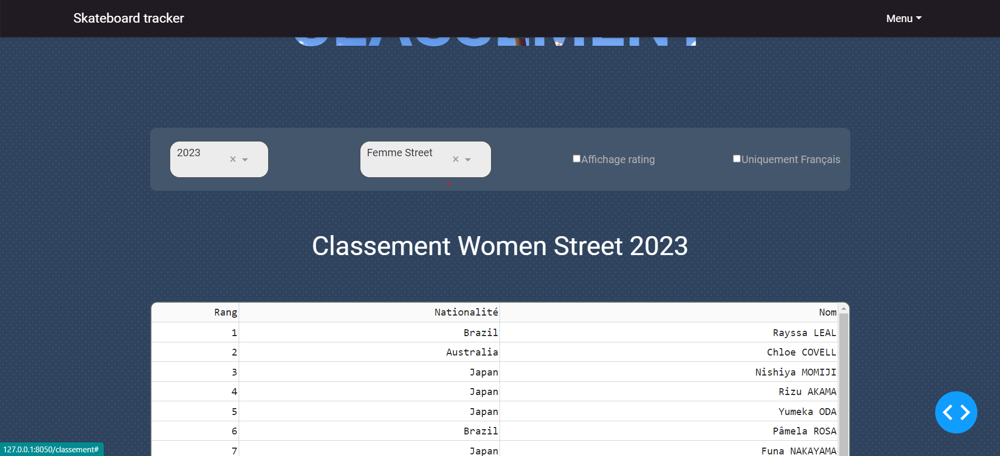
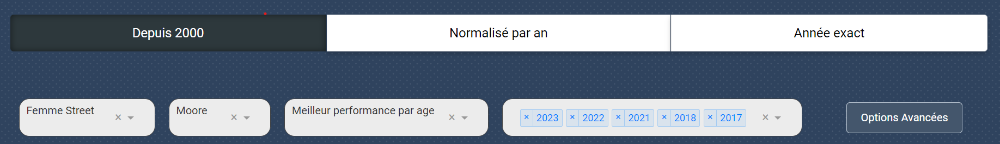
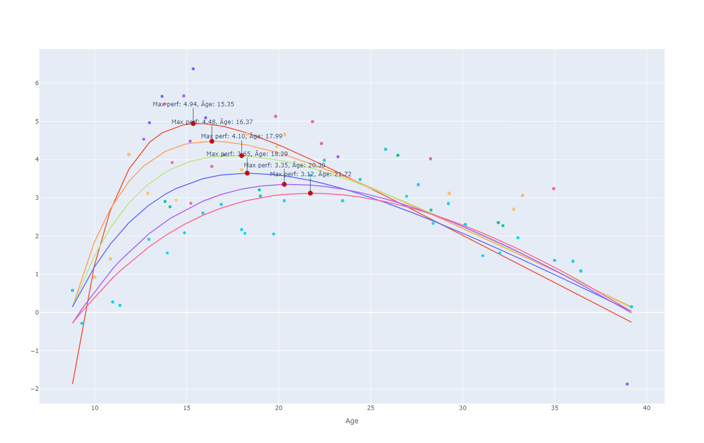
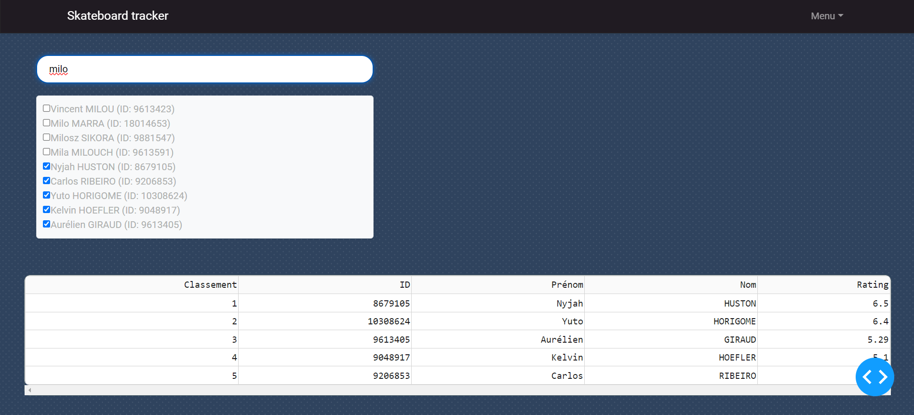
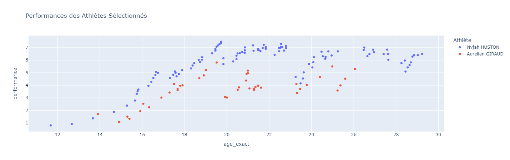

Comprehensive Analysis of Age and Performance in Skateboarding
Collaborating with the French Federation of Roller and Skateboarding (FFRS), my project aims to create tools for coaches while also understanding and analyzing performance trends, especially among female athletes. Notably, we have observed a decrease in the age of winners, with recent competitions often being won by women under 15 years old.
Data Collection and Processing
The project began with collecting competition data provided by the federation. I meticulously processed this data to manage missing values and correct inaccuracies. Additionally, I employed web scraping techniques to gather missing information, particularly focusing on the ages of the skateboarders.
Adaptation of Performance Rating Systems
Given the project's need to objectively track and evaluate athlete performances, I tested several established rating systems used in other sports and contexts, specifically:
- Elo — Adapted to reflect individual scoring metrics unique to skateboarding, accommodating the sport's qualitative and quantitative performance factors.
- Glicko — Modified to include a rating reliability measure, crucial for a sport characterized by frequent and varied competition formats.
- Stephenson — Applied to evaluate multiple performance indicators simultaneously, providing a comprehensive assessment of athlete capabilities.
Finally, I adapted Chloe Gobé's code for the Glicko model, which she originally developed for the 'Project Medaillabilité'.
Ranking Inflation Analysis
Inspired by studies conducted within the chess community, I embarked on a detailed examination of ranking inflation within skateboarding rankings. This phenomenon, where the numerical growth in athlete rankings does not necessarily correspond with true improvements in performance, required the development of a nuanced approach to adjust ratings over time. By analyzing the correlation between the competitor population size and the maximal ranking scores.

Statistical Modeling and Analysis of Age-Performance Relationships
To understand the dynamics of athlete performance relative to age, I utilized regression models and advanced statistical techniques. These include non-linear regression methods to fit age-performance curves. The focus was particularly on identifying and modeling the age at peak performance, exploring how this critical metric has shifted over time and differs between genders.
The automated analysis tools I developed calculate yearly Moore and IMAP model parameters for each gender, enabling the dynamic generation and update of performance curves. This method allows for continuous monitoring and updating of trends as new data becomes available, providing stakeholders with the most current insights into performance trajectories.
 Conclusion of Analysis Phase
Our analysis revealed a notable improvement in performance levels and a decrease in the age at peak performance among female skateboarders in the street category. We hypothesize that this trend is linked to the inclusion of skateboarding in the 2016 Olympics, where for the first time, female skateboarders were prominently showcased. This exposure has likely inspired a new generation of young female skateboarders who have adopted innovative training techniques, previously uncommon in women's skateboarding.
Advanced Predictive Modeling and Competition Analysis
To extend the utility of the project, I developed predictive models that utilize the refined ranking data to forecast outcomes of future competitions. This predictive feature helps coaches and athletes strategize more effectively by providing probabilistic assessments of potential competition results based on historical and current performance data. These models rely on the sophisticated ratings generated by our customized ranking systems, ensuring accurate and reliable predictions.
Individual Athlete Trajectory and Performance Tools
Another significant feature of the dashboard is the individual athlete trajectory analysis tool. This tool visualizes the career progression of skateboarders, showing key performance metrics over time. It helps coaches and athletes track progress, set goals, and anticipate future performance based on past trends. Looking ahead, these data will be invaluable for developing predictive models, such as "modèle mixte", to forecast skateboarder performances more accurately.
Addressing Ranking Inflation: A Deeper Dive
During my study on ranking inflation, I sought to develop statistical methods to address this complex phenomenon. Although I did not succeed in finalizing a method to adjust rankings effectively, the exploration allowed me to gain a deeper understanding of various ranking models. This experience enriched my knowledge of how rankings can be influenced by the size and skill level of the competitor pool and highlighted the need for further research in this area.
Conclusion and Future Directions
This project has contributed to the field of sports performance analytics by utilizing data-driven techniques to analyze and predict dynamics in skateboarding performance. The tools developed have proven valuable for stakeholders in the sport and have laid a foundation for similar analyses in other sports disciplines. While my formal internship has concluded, I occasionally continue to refine these tools. Going forward, I plan to integrate real-time performance tracking and further enhance our predictive algorithms to provide deeper insights and improve strategic planning capabilities within the sport.
Contact Information
Though my direct involvement in this project has formally ended, I continue to take an interest in the ongoing development and application of these analytical tools. For more information about the project and its methodologies, please feel free to reach out to me at alban.danet@efrei.net.